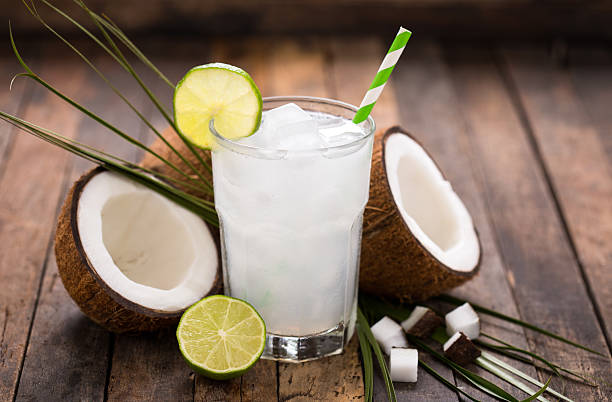
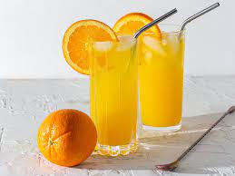

1.Coconut juice:

Coconut water is the liquid that pours out when you crack open a coconut.
Older coconuts (the ones that are brown and hairy)
generally provide better coconut milk, which is made
from the flesh of the coconut. Younger, green coconuts produce better coconut water.
This beverage has a salty-sweet taste that can be divisive, but it does provide fewer
calories than most fruit juices. It also provides vitamin C plus carbs and electrolytes
that can be helpful for recovery after exercise.
A one-cup serving of coconut water provides about 10 grams of carbohydrate;
most of that (about 9 grams) is naturally occurring sugar. Some brands of coconut
water are sweetened with added sugars,
so check labels carefully if you are looking to limit sugar.Fats
There is usually little to no fat (less than 1 gram) in coconut water, but some brands may contain a small amount of fat.
Protei Coconut water contains a small amount of protein; the amount can vary by brand.
2.Orange juice :

Orange juice is enjoyed throughout the world. In fact, surveys reveal that it is the world’s
most popular fruit juice. Manufacturers produce around 1.6 billion metric tons of this beverage
each year.In addition to buying orange juice in many varieties at grocery stores, you can also
squeeze your own orange juice by hand or with an electric juicer.
One popular form of orange juice available in stores is frozen orange juice concentrate.
To drink this form of orange juice, you need to mix cold water with the concentrate.
This method became widespread during World War II when the United States Dairy Association
(USDA) partnered with food scientist Richard Stetson Mores to create a reliable frozen orange
juice concentrate process. Orange juice contains many beneficial nutrients — most notably Vitamin C — but you should consider the amount of sugar in each serving. You may want to limit your intake or choose a 100 percent fruit juice version that doesn’t contain added sugar.